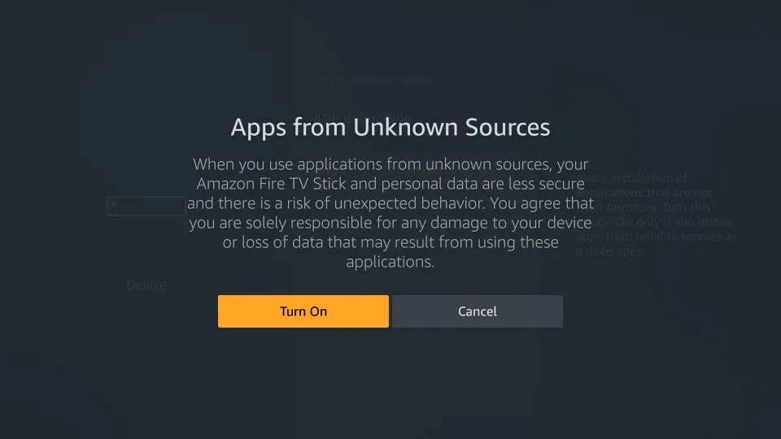
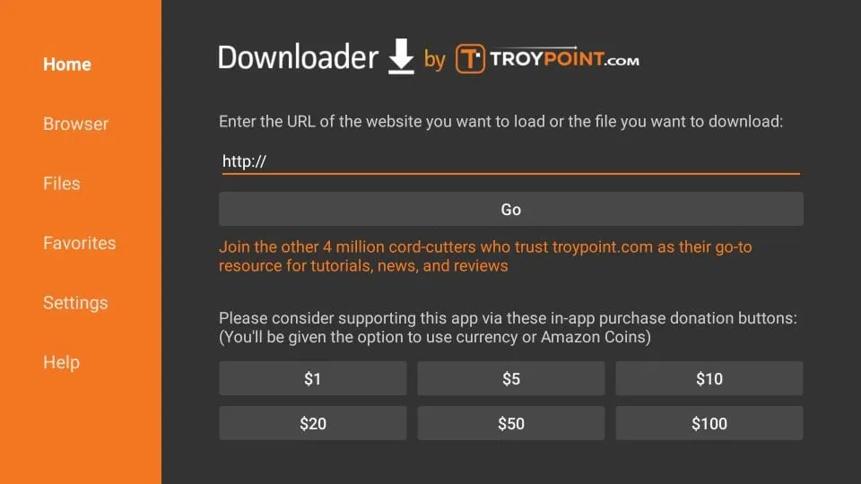
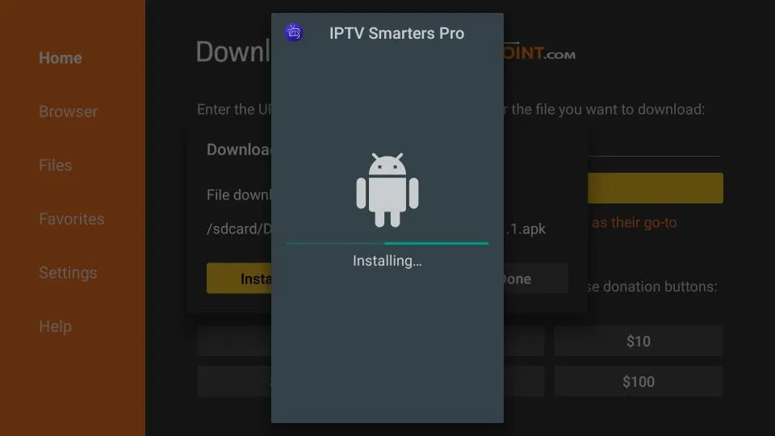

How to Install IPTV Smarters Player on Amazon Firestick
Even though IPTV Smarters is available on Google Play Store and Apple App Store for Android and iOS devices, Amazon Store does not host it. Therefore, to install it on your Firestick, you will need to sideload it.
Before we begin, make sure that "Apps from Unknown Sources" is enabled. Follow these steps carefully.
Step 1: Enable Apps from Unknown Sources
- On your Firestick home screen, find the top menu bar.
- Select Settings.

1. In Settings, choose "My Fire TV"

2. Click "About" if Developer Options are hidden

3. Click on your Fire TV Stick 7 times to unlock Developer Options

4. Once Developer Options are enabled, select it from the menu

5. Turn ON "Apps from Unknown Sources"

6. When you see a warning message, click Turn On
Now your Firestick is ready to install third-party apps like IPTV Smarters.
Step 2: Install Downloader App
This app allows you to download IPTV Smarters since browsers are not supported for downloads.
- Highlight the search icon and type "Downloader".
- Select and open the Downloader app.
- Enter one of the following URLs:
- https://www.iptvsmarters.com (Official website)
- 224877 (Short code)
- https://bit.ly/2TQvWNt (Short URL)
Click Go and wait for the app to download and install.
 Step 3: IPTV Smarters Setup
We recommend setting up IPTV Smarters via Xtream Codes API for better performance and automatic EPG loading.
- Open IPTV Smarters and click "Login with Xtream Codes API".
- Enter your login details (Username, Password, Server URL).
- Select Live TV to start watching channels.
To add EPG, simply click on Install EPG — no need to add URLs manually.
That's it! You have successfully installed and set up IPTV Smarters Pro on Firestick. Enjoy watching your favorite channels with 8kIPTV4U.
If you face any issue, contact us — we're always online to help.